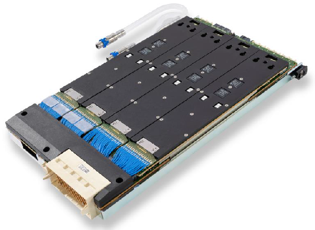

Pin Scale 5000 card
The Pin Scale 5000 card is the digital base card of a V93000 EXA Scale system. With 256 channels per card, it supports higher pin count and higher multisite testing, which enables smaller infrastructure usage and cost.
| Supported V93000 systems : EXA Scale (SmarTest 7+8) |

Specific design rules
Specific design rules must be followed when designing a new DUT board and assigning PS5000 channels:
- Pogo pad and via design: The standard recommendations for pogo pads and vias apply to all pogo block types of the Pin Scale 5000 pogo cable assemblies.
- Differential pin pair assignment: Pin Scale 5000 channels can be configured as single ended channels or as differential channel pairs. The topics shows the assignment of the differential pin pairs on each pogo block.
- Note Ganging is not supported in SmarTest 7.Ganging: Pin Scale 5000 channels support the ganging of two adjacent channels. The arrangement of the channels must be taken into account when designing a DUT board.
- NoteRemote sensing: Pin Scale 5000 channels support remote sensing via the neighboring channel. The arrangement of the channels must be taken into account when designing a DUT board. For applications that need remote sensing and high-speed digital I/O capability on the same DUT pin, relays can be required to disconnect the sense line.
The remote sensing feature is not available in SmarTest 8.4.4 but subject to a later SmarTest release.
Remote sensing is not supported in SmarTest 7.
- Ground sensing: Pin Scale 5000 cards feature remote sensing of the common ground. The ground sense pins are available per 16 channels for SD and HD pogo blocks and per 32 channels for the VHD pogo blocks. The assignment of the ground sense pins to the channels must be taken into account when designing a DUT board.
- Pin assignment for Fast Sync / Fast Match: For fast local synchronization, the synchronized DUT pins must be assigned to the same group of channels respectively to the same test processor.
- Recommendations for use: Recommendations like the Sense connection test may influence the channel assignment.
- HV (High-Voltage) protection: PS5000 channels are protected against high voltage in
the range from -80 V to +80 V. Since PS5000 channels may be connected
to high-voltage cards via defective DUTs or unintentionally closed connections,
we recommend that you implement a high-voltage protection circuitry on your DUT
boards if other cards or inductive loads on the DUT board can cause this voltage
range to be exceeded.To assess whether separate high-voltage protection is required, you must also take into account spikes caused by inductive loads or the inductance of traces on the DUT board or of cables.
See also High-speed DUT board design.
Functional changes
- Introduced in SmarTest 8.4.0
- SmarTest 8.4.3: Remote sensing is not applicable in SmarTest 8.4.3.